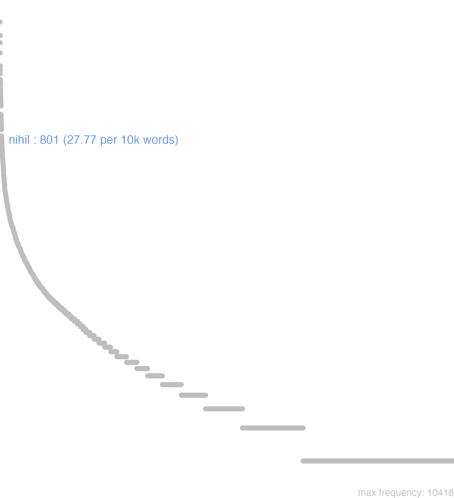

110 nihil
110.0.0.1 bases lexicais
id: http://lila-erc.eu/data/id/lemma/114071
classe: pronome
paradigma: 2ª declinação (tema em -o-)
outras grafias: nihilum, nil, nilum
variantes do lema:
no data
nĭhĭl
nĭhĭlum
nĭhĭlī
nīl
no data
110.0.0.2 dicionários tradicionais
nihil
ou nīl
n. indecl. É usado como subs. e adv.
gen. de nihĭlum.
nihĭlum -ī
subs. n. e adv.
ou nīl
n. indecl. É usado como subs. e adv.
1 I-Subs.:-Sent. próprio: Nada:
2 I-Subs.:-Sent. próprio: Nada, nulidade, inutilidade Cíc. Tusc. 3, 77.
3 II-Empregos particulares:-nihil reforçado por ne … nec:
4 II-Empregos particulares:
5 II-Empregos particulares:
6 II-Empregos particulares:
7 II-Empregos particulares:
8 II-Empregos particulares:
9 II-Empregos particulares:
10 II-Empregos particulares:
11 III-Adv.: Por motivo algum, por nada, em nada absolutamente Cés. B. Gal. 2. 20. 4.
[EXEMPLOS]
1
nihil agere C íc. C. M. 15 “nada fazer”.
3
nihil nec obsignatum nec occlusum Cíc. De Or. 2. 248 “nada nem de selado nem de fechado”.
4
nihil est cur, quod, ut, “não há razão para que”. Cíc. Of. 1, 133.
5
nihil ad te, ad me subent. attinet. “nada te importa, nada me importa”. Cíc. Pis. 68.
6
nihil ad ’nada em comparação com”. Cíc. De Or. 2. 25.
7
nihil non “tudo, todo o possível” Cíc. Br. 140.
8
Non nihil «alguma coisa» Cíc. Fam. 4, 14, 2.
9
nihil nisi, nihil aliud nisi “nada mais a não ser” T. Lív. 2, 29, 4.
10
nihil minus “absolutamente nada”, “o menos possível”. Cic. Of. 3. 81.
gen. de nihĭlum.
nihĭlum -ī
subs. n. e adv.
1 I-Subs.: Nada, coisa nenhuma Cíc. Div. 2. 37.
2 I-Expressões particulares:-Nihili de nada, sem valor:
3 I-Expressões particulares:
4 I-Expressões particulares:-Nihilo mais comp. “nada mais”:
5 II-Adv.: De modo nenhum, de forma nenhuma Hor. Sát. 2, 3, 54.
[EXEMPLOS]
2
esse nihili Plaut. Ps. 1.104 “não valer nada”.
3
De nihilo, “por nada, sem razão, sem fundamento” T. Lív. 30. 29. 4.
4
nihilo beatior Cíc. Fin. 5, 83 “nada mais feliz”.
nīl
v. nihil Cíc. Tusc. 3. 66. nilum -ī
v. nihìlum.
no data
Nihil
indec. n.
n.
adv. Nilum -i
n.
indec. n.
1 Cic. nada.
2 Ter. não.
n.
1 Cic. nada, cousa nenhuma.
Niladv. Nilum -i
n.
1 Lucr. nada.
Nihil
per Apocopen
1 nada
[EXEMPLOS]
X
nihil pensi habere naõ se lhe dar de nada
1 nada
[EXEMPLOS]
X
nihil pensi habere naõ se lhe dar de nada
per Apocopen
1 nada
[EXEMPLOS]
X
nihil pensi habere naõ se lhe dar de nada
Nihil
indeclinabile.
indeclinabile.
indeclinabile.
1 nada
nihilum iindeclinabile.
1 nada
110.0.0.3 dados de corpus
![This chart plots collocate by scoreSUBST, for the headword nihil here are all the values plotted: collocate: habeo; scoreSUBST: 0. collocate: alius; scoreSUBST: 0. collocate: ago; scoreSUBST: 0. collocate: enim; scoreSUBST: 0. collocate: possum; scoreSUBST: 0. collocate: sum; scoreSUBST: 0. collocate: umquam; scoreSUBST: 0. collocate: tam; scoreSUBST: 0. collocate: ego; scoreSUBST: 0. collocate: dico; scoreSUBST: 0. collocate: timeo; scoreSUBST: 0. collocate: si; scoreSUBST: 0. collocate: ut; scoreSUBST: 0. collocate: malum; scoreSUBST: 2. collocate: pro; scoreSUBST: 0. collocate: prosum; scoreSUBST: 0. collocate: praeter; scoreSUBST: 0. collocate: inuenio; scoreSUBST: 0. collocate: scio; scoreSUBST: 0. collocate: cogito; scoreSUBST: 0. collocate: quia; scoreSUBST: 0. collocate: refert; scoreSUBST: 0. collocate: ample; scoreSUBST: 0. collocate: opusculum; scoreSUBST: 2. collocate: sane; scoreSUBST: 0. collocate: profecto; scoreSUBST: 0. collocate: pertineo; scoreSUBST: 0. collocate: satis2; scoreSUBST: 0. collocate: adhuc; scoreSUBST: 0. collocate: rogo; scoreSUBST: 0. collocate: moror; scoreSUBST: 0. collocate: necesse; scoreSUBST: 0. collocate: omnino; scoreSUBST: 0. collocate: amplus; scoreSUBST: 0. collocate: ostendo; scoreSUBST: 0. collocate: decerno; scoreSUBST: 0. collocate: opus; scoreSUBST: 1](./Media/wordcloud__xx110-105-104-105-108xx__BY_collocate_scoreSUBST.webp)
![This chart plots collocate by scoreADJ, for the headword nihil here are all the values plotted: collocate: habeo; scoreADJ: 0. collocate: alius; scoreADJ: 0. collocate: ago; scoreADJ: 0. collocate: enim; scoreADJ: 0. collocate: possum; scoreADJ: 0. collocate: sum; scoreADJ: 0. collocate: umquam; scoreADJ: 0. collocate: tam; scoreADJ: 0. collocate: ego; scoreADJ: 0. collocate: dico; scoreADJ: 0. collocate: timeo; scoreADJ: 0. collocate: si; scoreADJ: 0. collocate: ut; scoreADJ: 0. collocate: malum; scoreADJ: 0. collocate: pro; scoreADJ: 0. collocate: prosum; scoreADJ: 0. collocate: praeter; scoreADJ: 0. collocate: inuenio; scoreADJ: 0. collocate: scio; scoreADJ: 0. collocate: cogito; scoreADJ: 0. collocate: quia; scoreADJ: 0. collocate: refert; scoreADJ: 0. collocate: ample; scoreADJ: 0. collocate: opusculum; scoreADJ: 0. collocate: sane; scoreADJ: 0. collocate: profecto; scoreADJ: 0. collocate: pertineo; scoreADJ: 0. collocate: satis2; scoreADJ: 2. collocate: adhuc; scoreADJ: 0. collocate: rogo; scoreADJ: 0. collocate: moror; scoreADJ: 0. collocate: necesse; scoreADJ: 0. collocate: omnino; scoreADJ: 0. collocate: amplus; scoreADJ: 2. collocate: ostendo; scoreADJ: 0. collocate: decerno; scoreADJ: 0. collocate: opus; scoreADJ: 0](./Media/wordcloud__xx110-105-104-105-108xx__BY_collocate_scoreADJ.webp)
![This chart plots collocate by scoreVERBO, for the headword nihil here are all the values plotted: collocate: habeo; scoreVERBO: 3. collocate: alius; scoreVERBO: 0. collocate: ago; scoreVERBO: 2. collocate: enim; scoreVERBO: 0. collocate: possum; scoreVERBO: 2. collocate: sum; scoreVERBO: 3. collocate: umquam; scoreVERBO: 0. collocate: tam; scoreVERBO: 0. collocate: ego; scoreVERBO: 0. collocate: dico; scoreVERBO: 2. collocate: timeo; scoreVERBO: 2. collocate: si; scoreVERBO: 0. collocate: ut; scoreVERBO: 0. collocate: malum; scoreVERBO: 0. collocate: pro; scoreVERBO: 0. collocate: prosum; scoreVERBO: 2. collocate: praeter; scoreVERBO: 0. collocate: inuenio; scoreVERBO: 2. collocate: scio; scoreVERBO: 2. collocate: cogito; scoreVERBO: 2. collocate: quia; scoreVERBO: 0. collocate: refert; scoreVERBO: 2. collocate: ample; scoreVERBO: 0. collocate: opusculum; scoreVERBO: 0. collocate: sane; scoreVERBO: 0. collocate: profecto; scoreVERBO: 0. collocate: pertineo; scoreVERBO: 2. collocate: satis2; scoreVERBO: 0. collocate: adhuc; scoreVERBO: 0. collocate: rogo; scoreVERBO: 2. collocate: moror; scoreVERBO: 2. collocate: necesse; scoreVERBO: 0. collocate: omnino; scoreVERBO: 0. collocate: amplus; scoreVERBO: 0. collocate: ostendo; scoreVERBO: 2. collocate: decerno; scoreVERBO: 2. collocate: opus; scoreVERBO: 0](./Media/wordcloud__xx110-105-104-105-108xx__BY_collocate_scoreVERBO.webp)
![This chart plots collocate by scoreADV, for the headword nihil here are all the values plotted: collocate: habeo; scoreADV: 0. collocate: alius; scoreADV: 0. collocate: ago; scoreADV: 0. collocate: enim; scoreADV: 2. collocate: possum; scoreADV: 0. collocate: sum; scoreADV: 0. collocate: umquam; scoreADV: 2. collocate: tam; scoreADV: 2. collocate: ego; scoreADV: 0. collocate: dico; scoreADV: 0. collocate: timeo; scoreADV: 0. collocate: si; scoreADV: 0. collocate: ut; scoreADV: 0. collocate: malum; scoreADV: 0. collocate: pro; scoreADV: 0. collocate: prosum; scoreADV: 0. collocate: praeter; scoreADV: 0. collocate: inuenio; scoreADV: 0. collocate: scio; scoreADV: 0. collocate: cogito; scoreADV: 0. collocate: quia; scoreADV: 0. collocate: refert; scoreADV: 0. collocate: ample; scoreADV: 2. collocate: opusculum; scoreADV: 0. collocate: sane; scoreADV: 2. collocate: profecto; scoreADV: 2. collocate: pertineo; scoreADV: 0. collocate: satis2; scoreADV: 0. collocate: adhuc; scoreADV: 2. collocate: rogo; scoreADV: 0. collocate: moror; scoreADV: 0. collocate: necesse; scoreADV: 2. collocate: omnino; scoreADV: 2. collocate: amplus; scoreADV: 0. collocate: ostendo; scoreADV: 0. collocate: decerno; scoreADV: 0. collocate: opus; scoreADV: 0](./Media/wordcloud__xx110-105-104-105-108xx__BY_collocate_scoreADV.webp)
![This chart plots collocate by scoreFUNC, for the headword nihil here are all the values plotted: collocate: habeo; scoreFUNC: 0. collocate: alius; scoreFUNC: 0. collocate: ago; scoreFUNC: 0. collocate: enim; scoreFUNC: 0. collocate: possum; scoreFUNC: 0. collocate: sum; scoreFUNC: 0. collocate: umquam; scoreFUNC: 0. collocate: tam; scoreFUNC: 0. collocate: ego; scoreFUNC: 0. collocate: dico; scoreFUNC: 0. collocate: timeo; scoreFUNC: 0. collocate: si; scoreFUNC: 20. collocate: ut; scoreFUNC: 20. collocate: malum; scoreFUNC: 0. collocate: pro; scoreFUNC: 20. collocate: prosum; scoreFUNC: 0. collocate: praeter; scoreFUNC: 20. collocate: inuenio; scoreFUNC: 0. collocate: scio; scoreFUNC: 0. collocate: cogito; scoreFUNC: 0. collocate: quia; scoreFUNC: 20. collocate: refert; scoreFUNC: 0. collocate: ample; scoreFUNC: 0. collocate: opusculum; scoreFUNC: 0. collocate: sane; scoreFUNC: 0. collocate: profecto; scoreFUNC: 0. collocate: pertineo; scoreFUNC: 0. collocate: satis2; scoreFUNC: 0. collocate: adhuc; scoreFUNC: 0. collocate: rogo; scoreFUNC: 0. collocate: moror; scoreFUNC: 0. collocate: necesse; scoreFUNC: 0. collocate: omnino; scoreFUNC: 0. collocate: amplus; scoreFUNC: 0. collocate: ostendo; scoreFUNC: 0. collocate: decerno; scoreFUNC: 0. collocate: opus; scoreFUNC: 0](./Media/wordcloud__xx110-105-104-105-108xx__BY_collocate_scoreFUNC.webp)
![This charts plots the frequency of lemma by author_Frequencies. The Seneca subcorpus registers the highest normalized frequency, with the value of 36.02 and an absolute frequency of 193. The Horatius subcorpus follows, with a normalized frequency of 31.97 and an absolute frequency of 36. the subcorpus with the least normalized frequency is Vergilius with the normalized value of 0 and an absolute freqeuncy of 0. here are all the values: subcorpus: Caesar ; normalized frequency: 27 ; absolute frequency: 10.1971447994562. subcorpus: Cicero ; normalized frequency: 513 ; absolute frequency: 31.9578380802871. subcorpus: Horatius ; normalized frequency: 36 ; absolute frequency: 31.9687416748069. subcorpus: Ovidius ; normalized frequency: 1 ; absolute frequency: 1.71585449553878. subcorpus: Phaedrus ; normalized frequency: 9 ; absolute frequency: 13.6632761499924. subcorpus: Sallustius ; normalized frequency: 14 ; absolute frequency: 12.9858083665708. subcorpus: Seneca ; normalized frequency: 193 ; absolute frequency: 36.020231052052. subcorpus: Suetonius ; normalized frequency: 2 ; absolute frequency: 22.0507166482911. subcorpus: Tacitus ; normalized frequency: 5 ; absolute frequency: 17.164435290079. subcorpus: Vergilius ; normalized frequency: 0 ; absolute frequency: 0. subcorpus: Hieronymus ; normalized frequency: 1 ; absolute frequency: 2.24668613794653](./Media/barchart__xx110-105-104-105-108xx__lemma_BY_author_Frequencies.webp)
![This charts plots the frequency of lemma by genre_Frequencies. The Prosa.epistolográfica subcorpus registers the highest normalized frequency, with the value of 49.55 and an absolute frequency of 187. The Prosa.filosófica subcorpus follows, with a normalized frequency of 41.68 and an absolute frequency of 253. the subcorpus with the least normalized frequency is Poesia.épica with the normalized value of 0 and an absolute freqeuncy of 0. here are all the values: subcorpus: Prosa.histórica ; normalized frequency: 48 ; absolute frequency: 11.6848024538085. subcorpus: Prosa.filosófica ; normalized frequency: 253 ; absolute frequency: 41.6797087362646. subcorpus: Prosa.oratória ; normalized frequency: 255 ; absolute frequency: 24.4832121974403. subcorpus: Prosa.epistolográfica ; normalized frequency: 187 ; absolute frequency: 49.550862502981. subcorpus: Poesia.lírica ; normalized frequency: 36 ; absolute frequency: 30.2851854967612. subcorpus: Poesia.didática ; normalized frequency: 10 ; absolute frequency: 8.48248367121893. subcorpus: Poesia.trágica ; normalized frequency: 11 ; absolute frequency: 9.55524669909659. subcorpus: Poesia.épica ; normalized frequency: 0 ; absolute frequency: 0. subcorpus: Prosa.ficcional ; normalized frequency: 1 ; absolute frequency: 2.24668613794653](./Media/barchart__xx110-105-104-105-108xx__lemma_BY_genre_Frequencies.webp)
![This charts plots the frequency of lemma by period_Frequencies. The I.d.C. subcorpus registers the highest normalized frequency, with the value of 31.05 and an absolute frequency of 203. The I.a.C. subcorpus follows, with a normalized frequency of 27.46 and an absolute frequency of 590. the subcorpus with the least normalized frequency is IV.d.C. with the normalized value of 2.25 and an absolute freqeuncy of 1. here are all the values: subcorpus: I.a.C. ; normalized frequency: 590 ; absolute frequency: 27.4610193158017. subcorpus: I.d.C. ; normalized frequency: 203 ; absolute frequency: 31.0540003059507. subcorpus: II.d.C. ; normalized frequency: 7 ; absolute frequency: 18.3246073298429. subcorpus: IV.d.C. ; normalized frequency: 1 ; absolute frequency: 2.24668613794653](./Media/barchart__xx110-105-104-105-108xx__lemma_BY_period_Frequencies.webp)
nihil rogo
Sen.Ep.118.4
Não te peço nada.” [JDD]
nihil habet certi
Cic.Att.2.22.1
não tem nada de definido. [JDD, de outra edição]
nihil opus est
Cic.Deiot.40
Não é necessário. [JDD]
nihil sane iacturae
Cic.Att.4.17.2
sem nenhum dano. [JDD]
alii nihil stultius
Cic.Att.5.21.12
outros que não havia nada mais estulto. [JDD]
nihil erat absoluti
Cic.Att.1.16.18
Nada está terminado. [JDD]
nihil enim impedio
Cic.Off.1.2
- pois não impeço nada - [JDD, de outra edição]
nihil me est inertius
Cic.Att.2.8.1
nada é mais indolente do que eu. [JDD]
nihil praeter cibum natura desiderat
Sen.Ep.119.13
A natureza não deseja nada além da comida. [JDD]
nihil agens cum re publica
Cic.Att.1.13.2
que não faz nada para a república. [JDD, de outra edição]
nihil opus fuit ut spero
Cic.Att.5.21.3
não havia nenhuma necessidade de “pelo que espero”. [JDD, de outra edição]
cum ipso nihil eram locutus
Cic.Att.2.1.12
Com ele eu não tinha falado nada. [JDD]
nihil satis est morituris immo morientibus
Sen.Ep.120.17
Nada é suficiente para os que irão morrer, ou melhor, para os que estão morrendo. [JDD]
cum habeat duo facilis nihil difficilius
Cic.Att.4.16.4
embora ele tenha duas pessoas bem dispostas, não há nada mais difícil. [JDD]
nihil profecto sed ne difficilia optemus
Cic.Ver.2.4.15.2
Nada, sem dúvida, mas não desejemos coisas difíceis. [JDD]
nihil est quod non timendum sit
Cic.Att.2.17.1
Não há nada que não se deva temer. [JDD]
his tu si adesses nihil timerem
Cic.Att.5.20.7
Se tu estivesses presente, eu nada temeria. [JDD]
nihil moramur rapite quin grates ago
Sen.Ag.1010
Não vamos nos demorar, arrebatai-me; eu até agradeço. [JDD]
hoc mihi nihil potest esse gratius
Cic.Att.2.1.12
Nada pode ser mais gratificante do que isto para mim. [JDD]
habes crimina insidiarum nihil enim dixit amplius
Cic.Deiot.21
Aí tens a acusação da emboscada, pois não disse mais nada. [JDD]
nam ad me de eo nihil scripsisti
Cic.Att.1.3.2
pois a mim não escreveste nada sobre isso. [JDD]
populare nunc nihil tam est quam odium popularium
Cic.Att.2.20.4
Nada é agora tão popular como o ódio dos populares. [JDD]
egere enim necessitatis est nihil necesse sapienti est
Sen.Ep.9.14
pois sentir falta é próprio da necessidade, para o sábio nada é necessário. [JDD]
nihil horum uetari potest non magis quam accersi
Sen.Ep.11.6
nada dessas coisas pode ser impedida e tampouco ser obtida. [JDD]
tuo uitio rerum ne labores nil referre putas
Hor.S.1.2.76
Achas que não faz nenhuma diferença se sofres por culpa tua ou das circunstâncias? [JDD]
statui enim nihil iam de re publica cogitare
Cic.Att.2.4.4
pois decidi não pensar mais nada acerca da república. [JDD]
omnino adhuc nihil mihi significatis nisi discordiam istorum
Cic.Att.3.10.1
Até agora não me anunciais absolutamente nada, a não ser a discórdia desses. [JDD]
nihil accidere bono uiro mali potest non miscentur contraria
Sen.Prov.2.1
Nenhum mal pode acontecer a um homem bom: as coisas contrárias não se misturam. [JDD]
nihil per uim umquam Clodius omnia per uim Milo
Cic.Mil.36
“Clódio nunca fez nada por meio da violência, Milão, tudo por meio da violência.” [JDD]
cupiditati nihil satis est naturae satis est etiam parum
Sen.Helv.10.11
Para a cobiça nada é suficiente, para a natureza até mesmo pouco é suficiente. [JDD]
praeterea qui alium sequitur nihil inuenit immo nec quaerit
Sen.Ep.33.10
Além disso, quem segue o outro não encontra nada, ou mais ainda, nem investiga. [JDD]
si igitur Caesar hostis cur consul nihil refert ad senatum
Cic.Phil.3.21.5
Se, portanto, César é o inimigo, por que o cônsul não submete nada à deliberação do senado? [JDD]
poeta ineptus et tamen scit nihil sed est non inutilis
Cic.Att.2.20.6
Um poeta sem aptidão e não sabe nada; mas não é inútil. [JDD]
nihil est damni factum novi sed quod erat inventum est
Cic.Att.1.16.9
nenhum dano novo foi feito, mas descobriu-se o que já existia. [JDD]
non modo igitur nihil prodest sed obest etiam Clodi mors Miloni
Cic.Mil.34
Portanto, a morte de Clódio não só não é nada útil para Milão, mas ainda o prejudica. [JDD]
scio quosdam dicere contemptu nihil esse grauius mortem ipsis potiorem uideri
Sen.Helv.13.8
Sei que alguns dizem que não há nada mais penoso do que o menosprezo, que a morte lhes parece preferível. [JDD]
utrum hic panis sit plebeius an siligineus ad naturam nihil pertinet
Sen.Ep.119.3
Se este pão é comum ou é de farinha especial não tem nenhuma importância para a natureza. [JDD]
accipere potuistis sed ne nunc quidem auferetis quia nihil eripitur nisi retinenti
Sen.Prov.5.6
Pudestes receber. Mas nem mesmo agora me arrebatareis, porque nada se tira, a não ser para quem retém.” [JDD]
an ut hoc ostenderes contra uim tuam in patronis praesidi nihil esse
Cic.Ver.2.4.89.5
Acaso para mostrares que contra tua força não havia nenhuma proteção dos patronos? [JDD]
esse autem illis intellectum ex eo apparet quod nihil amplius si intellexerint facient
Sen.Ep.121.19
Mas que existe neles o entendimento se vê pelo fato de que, se entenderem, não farão nada mais. [JDD]
nihil de eius morte populus consultus est nulla quaestio decreta a senatu est
Cic.Mil.16
O povo não foi consultado a respeito de sua morte, nenhum inquérito foi decretado pelo senado. [JDD]
quod cum uenit omnis uoluptas praeterita pro nihilo est quia postea nulla est futura
Cic.Marc.27
Quando esse chega, todo prazer passado não serve para nada, porque não haverá nenhum depois disso. [JDD]
110.0.0.4 Diagrama de Zipf
